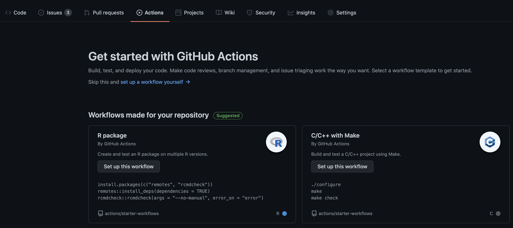
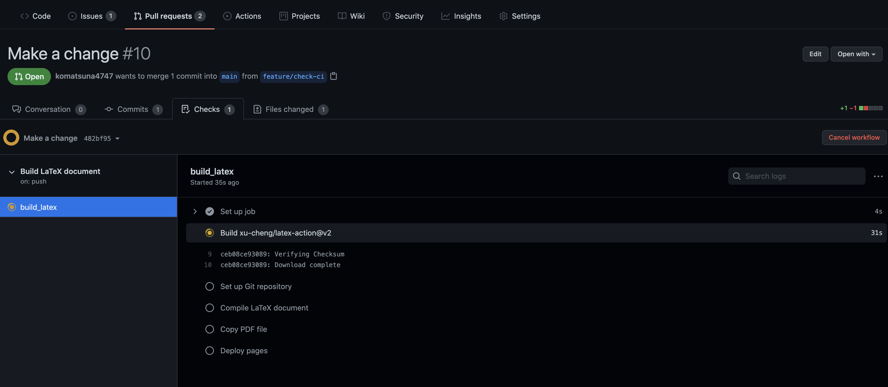
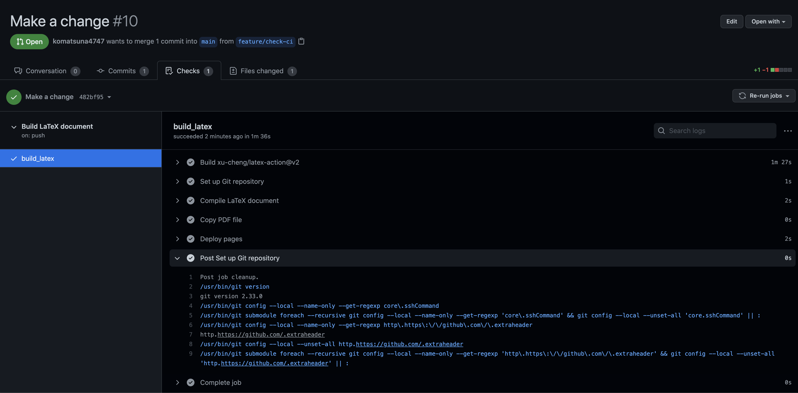
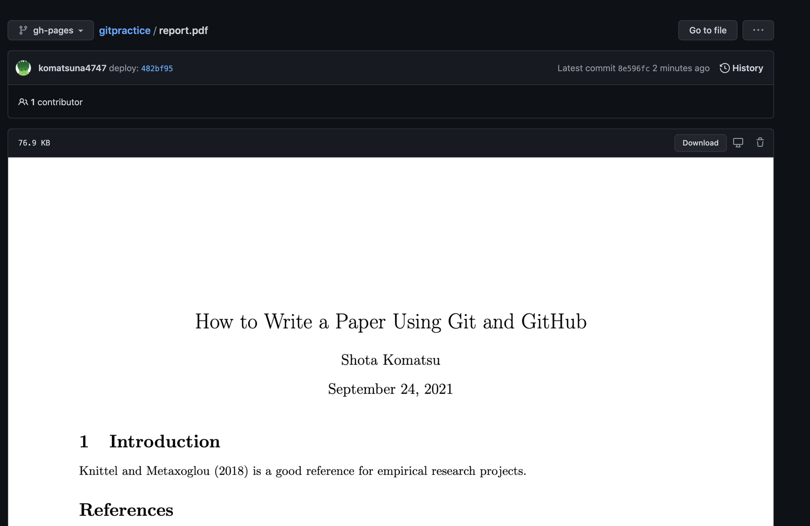
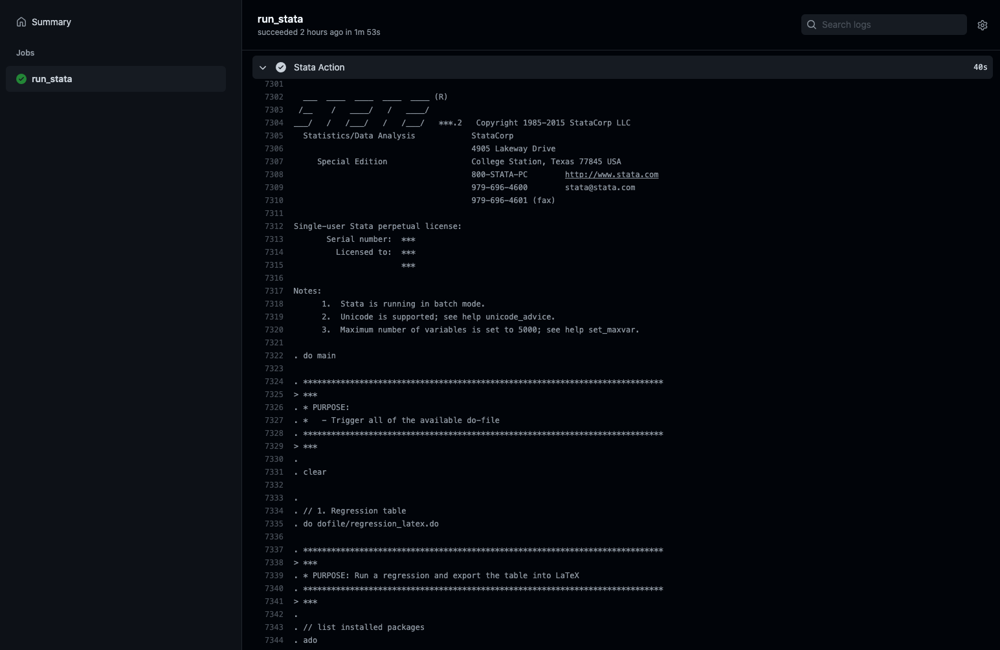

3 継続的インテグレーションで、ワークフローを自動化する
Git/GitHub の使い方に慣れ、共著者とコードの共有がスムーズにできるようになれば、それは大きな進歩である。 更新する毎にファイル名を変えたり、同じファイルをDropbox上で同時に編集しないように共著者同士で話し合ったり、そうした無駄を削減できるからだ。
しかし無駄を減らしていくと、もっと楽したいと思うのが人間の性である。 基本的なGit/GitHubのワークフローは、以下のようなものであると思う。
- 各人のローカルで作業を行い
- 各人のローカルでコードを走らせ
- その結果をリモートである GitHub にプッシュし
- pull request を通じてコミュニケーションを取る
このうち、「各人のローカルでコードを走らせ」と「その結果をリモートである GitHub にプッシュし」の部分を自動化して楽にしようというのが本章の内容である。
ローカルで手動で行っていたワークフローを自動化し、プログラムに変更があるたびに都度ビルド・テストをを行える環境を作ることを、継続的インテグレーション (Continuous Integration: CI) と呼ぶ。 それを可能にする機能の1つが、GitHub Actions である。GitHub Actions とは、開発者のワークフローを GitHub 上で自動化するためのツールである。
https://github.com/features/actions
ここでは、研究プロジェクトの遂行上で関連がありそうな、以下のユースケースを紹介したい。
- 論文・スライド用の tex ファイルを自動的にコンパイルし、最新版が常に見られるようにする
- 分析用のDo fileを修正したあとコードを回し、分析結果を自動的にアップデートする
- 作成している R のパッケージに修正を加え、単体テストを自動的に走らせる
3.1 論文・スライド用の tex ファイルを自動的にコンパイルし、最新版が常に見られるようにする
共著者の中には論文をチェックできれば良い人もいるため、そういう人にとっては tex ファイルをプルしてコンパイルする作業が面倒であったりする。
コンパイルできる人がローカルで pdf を作成し、それをリモートリポジトリにプッシュするのも良いだろうが、プッシュし忘れて、tex ファイルのバージョンと pdf ファイルのバージョンが食い違ったりすることもあり得る。
手作業による運用は往々にしてミスを生みがちなので、この辺を自動化したい。
つまり、 tex ファイルだけをプッシュすれば GitHub が勝手にコンパイルしてくれたりしないだろうか。
そこで、執筆者がローカルで tex file をコンパイルして pdf ファイルをアップロードする一連のワークフローを、GitHub Actions で自動化したい。 このように、
始め方は、リポジトリのルートディレクトリに .github/workflowというディレクトリを作り、その中に yaml ファイルを作成すればよい。
これは GitHub の Actions からも作成することも可能である。

ひとまず komatsuna4747/gitpractice/.github/workflow に以下のような main.yamlを作成した。
今回のワークフローの自動化では、こちらを利用している4。
# This is a basic workflow to help you get started with Actions
name: Build LaTeX document
# Controls when the workflow will run
on:
push:
paths:
- 'papers/report.tex'
jobs:
build_latex:
runs-on: ubuntu-latest
steps:
- name: Set up Git repository
uses: actions/checkout@v2
- name: Compile LaTeX document
uses: xu-cheng/latex-action@v2
with:
working_directory: papers
root_file: report.tex
- name: Copy PDF file
run: mkdir docs && cp papers/*.pdf docs/
- name: Deploy pages
uses: peaceiris/actions-gh-pages@v3
with:
github_token: ${{ secrets.GITHUB_TOKEN }}
publish_dir: ./docsこのファイルを容易することで、変更が加えられた tex ファイルが GitHub のリポジトリにプッシュされるごとに
- tex ファイルがコンパイルされて pdf が作成され
- 作成された pdf ファイルが
gh-pagesというブランチにプッシュされる
以上を自動的に行ってくれるようになる。したがって pdf ファイルだけを見たい人は、gh-pages の pdf をダウンロードして読めばよいことになる。
さらに、変更が加えられた tex ファイルがプッシュされるごとに、gh-pages の pdf も更新されるので、tex のファイルのバージョンと pdf のバージョンが常に最新版でリンクするようになるわけである。
実際にどのように動くのかを見てみよう。
まず、tex ファイルに以下のような変更を加えてコミットし、プッシュする。
$ git diff
diff --git a/papers/report.tex b/papers/report.tex
index 117cbb2..327440f 100644
--- a/papers/report.tex
+++ b/papers/report.tex
@@ -17,7 +17,7 @@
\section{Introduction}
-\citet{knittel2018working} is a good reference for data management issues in empirical research projects.
+\citet{knittel2018working} is a good reference for empirical research projects.
\bibliography{report}
\bibliographystyle{aer}$ git add -u
$ git status
On branch feature/check-ci
Changes to be committed:
(use "git restore --staged <file>..." to unstage)
modified: report.tex
$ git commit -m "Make a change"
[feature/check-ci 482bf95] Make a change
1 file changed, 1 insertion(+), 1 deletion(-)
$ git status
On branch feature/check-ci
nothing to commit, working tree clean
$ git push origin HEAD
Enumerating objects: 7, done.
Counting objects: 100% (7/7), done.
Delta compression using up to 16 threads
Compressing objects: 100% (4/4), done.
Writing objects: 100% (4/4), 345 bytes | 345.00 KiB/s, done.
Total 4 (delta 3), reused 0 (delta 0)
remote: Resolving deltas: 100% (3/3), completed with 3 local objects.
remote:
remote: Create a pull request for 'feature/check-ci' on GitHub by visiting:
remote: https://github.com/komatsuna4747/gitpractice/pull/new/feature/check-ci
remote:
To github.com:komatsuna4747/gitpractice.git
* [new branch] HEAD -> feature/check-ci変更が加えられた tex ファイルがプッシュされたので、以下のようにコンパイルをするための準備、およびコンパイルが始まった。

しばらく待つと、全ての作業が完了した。どこかで失敗が起こった場合、登録したメールアドレスの方に GitHub Actions のワークフローが失敗した通知が届く。

gh-pages ブランチの pdf ファイルを見ると、確かに変更が反映された pdf がアップロードされていることがわかる。

過去の pdf をみたい場合は、そのファイルの history からたどることができる。
tex のソースファイルを見たくない共著者にはこの pdf を共有して、コメントをもらえばよい。
このワークフローをよりカスタマイズしたい場合は、.github/workflows の yml ファイルを編集すればよい。
具体的には
- どのイベントをトリガーとするか (pull request か、push か、etc)
- 論文用・スライド用のtexファイルが別々にあるとき、片一方だけが更新されたときにそれだけをコンパイルする
など。
3.2 分析用のDo fileを修正したあとコードを回し、分析結果を自動的にアップデートする
GitHub Actions 上で Stata を走らせることができるパッケージが存在する (使うためにはStata を購入し、シリアルナンバーなどの情報が必要である)
https://github.com/ledwindra/continuous-integration-stata
筆者もこのパッケージを用いて遊んでみた。
https://github.com/komatsuna4747/ci-stata

これでできることは
- 新たに作成した/修正を加えた Do file がエラーなく回るかを確認する
- Do file から作成した図表を保存し、
- 新しい図表が作成されたとき、または図表に変更が加えれたときは、リモートの作業ブランチに自動的にコミットする
- 作成された図表に変更がない場合は、何もコミットしない
こうすることで、
- 各共著者のローカル環境に依存しない分析ワークフローの構築
- 分析、図表アップデートの自動化
が達成できる。
現時点で、この運用における問題点は以下の通り (to be updated)
- GitHub Actions で分析コードを回す時、どのようにデータをダウンロードしてくるか
- Dropbox の公開リンクを通じたダウンロードは、セキュリティ上望ましくない
- GitHub に直接データを置くことも、基本的には避けたほうがよい (大容量データを GitHub では管理しないこと)
- Google Drive, S3 の API を活用すればうまくいきそう。Dropbox は不明。
- ワークフローを実行するためマシンのスペックが高くないので、計算負荷の高いコードは回さない方がよい
- Linux 仮想マシンのハードウェア仕様は、2コアCPU、7 GBのRAMメモリー、14 GBのSSDディスク容量 (source) とのこと
- 簡単な回帰分析だけであれば試す価値は十分にある
- GitHub Actionsを回すためのホストマシンは、自前で用意することも可能 (EC2インスタンスなど)。ここを整備すれば、全てのワークフローを自動化することも可能に思われる。
3.3 作成している R のパッケージに修正を加え、単体テストを自動的に走らせる
Rのパッケージを作成時に大事なのは、そのパッケージに問題がないかを定期的に確認することである。
具体的には、単体テストがエラーなく回るかどうかを日常的に確認する。
もし CRAN にパッケージをサブミットする場合は、devtools::check() で ERROR, WARNING が0である必要がある。
ただし、devtools::check() はパッケージが大きくなると実行に時間がかかったり、テストがパスするかどうかを確認するのを忘れてpull requestを投げてしまったりすることがある。
ダブルチェックもかねて、GitHub Actions にこのあたりの任せるのは良い一手である。
R と GitHub Actions の組み合わせでは、こちらを参考にするとよいだろう。
https://github.com/r-lib/actions
筆者も遊びで、自作パッケージに GitHub Actions を用いた CI パイプラインを作成してみた。
https://github.com/komatsuna4747/myergm
3.3.1 注意点
GitHub Actions は、
- パブリックリポジトリだと無料
- プライベートリポジトリだと、以下の無料枠を使い切ったあとは従量課金制である
- Free アカウントだと 2000分/月まで無料
- Pro アカウントだと 3000分/月まで無料
なので GitHub Actions の使い方を練習したい場合は、念の為パブリックリポジトリで行うほうが良いだろう。
本来は、ローカルで Docker を用いた LaTeX 環境と同じもので GitHub 上でもコンパイルできるようにした方が理想である↩︎